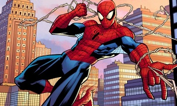

Presentación
Un superhéroe es un personaje de ficción cuyas características superan las del héroe clásico, generalmente con poderes sobrehumanos aunque no necesariamente, y entroncado con la ciencia ficción. Generados a finales de los años 1930 en la industria del comic book estadounidense, que contribuyeron a levantar,1han gozado de multitud de adaptaciones a otros medios, especialmente el cine.

El concepto superhéroe se retrotrae a La Pimpinela Escarlata, serie de novelas de capa y espada en las que Emma Orczy de Orci, baronesa británica de origen húngaro, crea a Sir Percy Blakeney, conocido en la sociedad británica georgiana como interesado más en sus ropas que en cualquier otra cosa.
